223 منشوراً
أرشيف 2020
كانون الأول 2020
- أخبار علمية · محاكاة أقمار المشتري
- أخبار علمية · صرعة تكنولوجية كبرى سوف تدق أبوابنا وتخترق حصوننا مشكلة تحديا كبيرا لنا لنتساءل ماذا نحن فاعلون؟!
- أخبار علمية · لقطة مذهلة “الاقتران العظيم” فوق برج خليفة
-
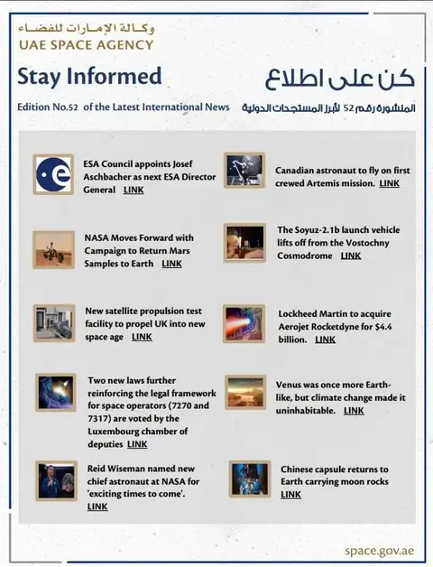
أخبار علمية · أبرز المستجدات الفلكية الدولية – صادر عن وكالة الإمارات للفضاء - أخبار علمية · “الاقتران العظيم” – ظاهرة فلكية نادرة لم تحدث منذ 400 سنة
- أخبار الاتحاد · بيان الجمعية الفلكية الأردنية حول الحدث الفلكي النادر الاقتران العظيم للمشتري وزحل
- أخبار علمية · موعد إطلاق أول تجربة علمية من الكويت إلى الفضاء
- محاضرات وفعاليات · دعوة لحضور محاضرة تاريخ النيازك والشهب للدكتور محمد زين العابدين الحسيني
- أخبار علمية · أهم الظواهر الفلكية لعام 2021
- محاضرات وفعاليات · رحلة مأهولة إلى المريخ قد تكون في 2024
- أخبار علمية · اليابان: نيزك متوهج يحول ظلمة الليل إلى نهار للحظات
-
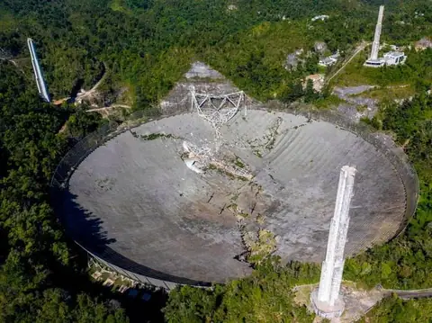
أخبار علمية · يوم حزين لعلم الفلك بسبب انهيار التلسكوب الراديوي العملاق في بورتو ريكو - محاضرات وفعاليات · ندوة علمية “نقاشات حول الفيزياء الحديثة والمعاصرة”
-
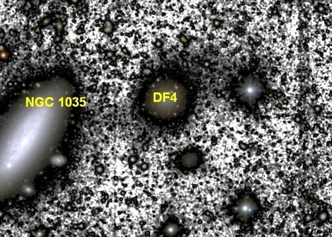
أخبار علمية · توصل علماء فلك من أستراليا وإسبانيا والولايات المتحدة الأمريكية إلى حل لغز افتقاد مجرة NGC 1052-DF4 إلى المادة الداكنة وأنها تعرضت إلى قوى جاذبية مضطربة مد وجزر (جذب ودفع) -
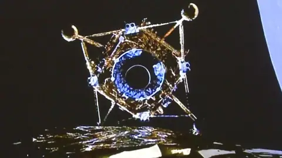
أخبار علمية · مشروع الصين الفضائي يقفز قفزة تاريخية (تشانج 5)
تشرين الثاني 2020
-
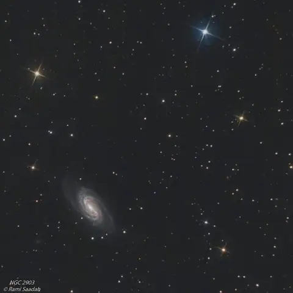
أخبار الاتحاد · صور فلكية - أخبار علمية · الشفق القطبي
- محاضرات وفعاليات · محاضرة بعنوان الأطروحات الحديثة لمعضلة فقدان المعلومات في الثقب الأسود
- أخبار علمية · سبيس إكس تبدأ تجربة إنترنت ستارلينك الفضائي بسعر 99$ شهرياً
-
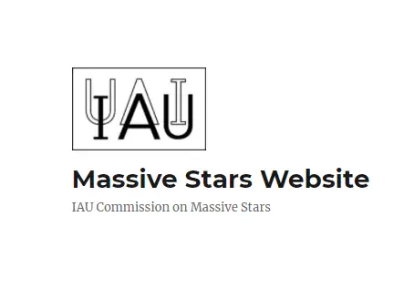
أخبار علمية · الاتحاد الفلكي الدولي يطلق موقعا إلكترونيا خاصا بالنجوم العملاقة - أخبار علمية · هل الكون في ظلام حالك؟
-
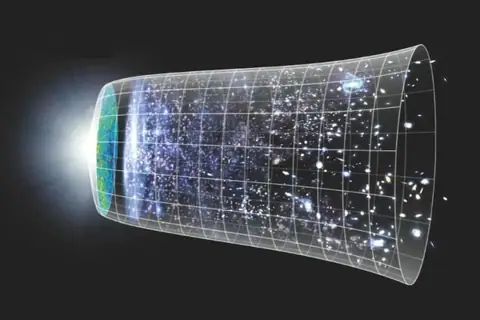
أخبار علمية · عكس ما توقع العلماء.. الكون يتمدد ويزداد حرارة في الوقت نفسه -
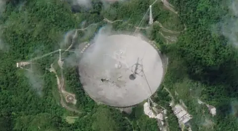
أخبار علمية · خسارة علمية واقتصادية فادحة.. إغلاق مرصد أريسيبو الراديوي نهائيا - محاضرات وفعاليات · الاتحاد الفلكي الدولي يعقد اجتماعه الخامس لدول الشرق الأوسط وأفريقيا بالتزامن مع انطلاق مؤتمره حول تدريس وأبحاث الفلك للأجيال القادمة
-
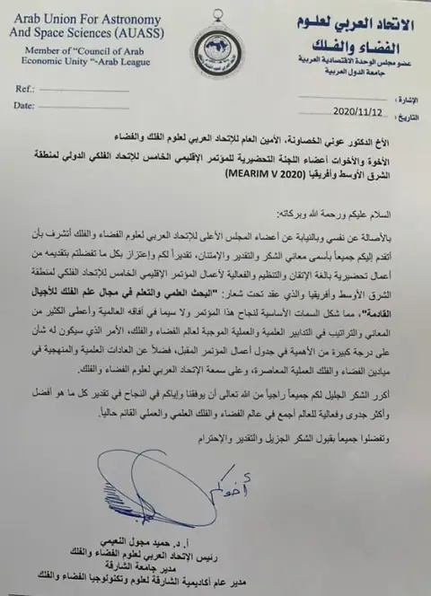
أخبار الاتحاد · رسالة شكر وتقدير - أخبار علمية · مشروع إماراتي لتحليل بيانات الاستشعار عن بُعد
-
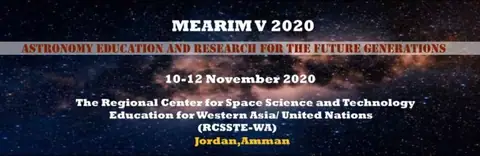
محاضرات وفعاليات · الاجتماع الخامس لمنطقة الشرق الأوسط وأفريقيا / 10-12 نوفمبر 2020 -
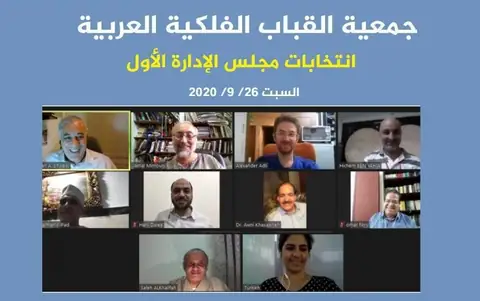
أخبار الاتحاد · جمعية القباب الفلكية العربية – انتخابات مجلس الإدارة الأول - أخبار علمية · ظاهرة فلكية تشهدها سماء العالم يوم 21 ديسمبر
- أخبار الاتحاد · مجلة «دليل السماء» (Sky at Night بالعربية) – نوفمبر 2020
- محاضرات وفعاليات · دورة عن بعد للمهتمين في علم الفلك الراديوي
- محاضرات وفعاليات · إعلان مؤتمر MEARIM (10-12) نوفمبر 2020
- أخبار الاتحاد · مجلة الثريا – عدد نوفمبر
تشرين الأول 2020
- محاضرات وفعاليات · دعوة لحضور فيلم وثائقي عبر الزوم حول محطة الفضاء الدولية في عامها العشرين
- أخبار علمية · علماء الفلك: المرأة المسلسلة بدأت بالفعل الاندماج مع مجرتنا درب التبانة
- أخبار علمية · ماذا أعلنت وكالة الفضاء الأمريكية (ناسا) اليوم؟ الإثنين 26-10-2020
- أخبار علمية · فيديو – ابن الشاطر
- أخبار علمية · العالم التركي فؤاد سيزكين – الوعي أساس الحضارة
- أخبار علمية · أول تجربة لإنشاء مستعمرة بشرية على سطح القمر في «مهمة خاصة»
- أخبار الاتحاد · قاعدة بيانات الاتحاد العربي لعلوم الفضاء والفلك
- أخبار علمية · مذكرة تفاهم بين جامعة بني سويف والمركز الإقليمي لتدريس علوم وتكنولوجيا الفضاء لغرب آسيا
أيلول 2020
-
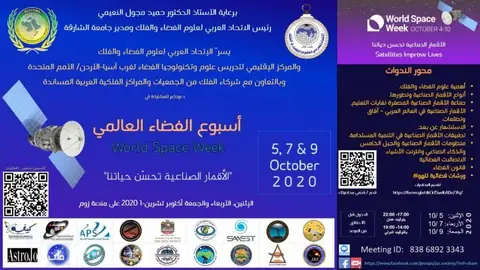
أخبار الاتحاد · أسبوع الفضاء العالمي - أخبار علمية · العثور على علامة “احتمال وجود حياة” على كوكب الزهرة
- أخبار علمية · هل نحن وحيدون في هذا الكون؟
- أخبار علمية · العلماء الروس يجدون آثارا للحياة خارج كوكب الأرض
- أخبار علمية · تلسكوب الصين العظيم يبحث عن مخلوقات فضائية
-
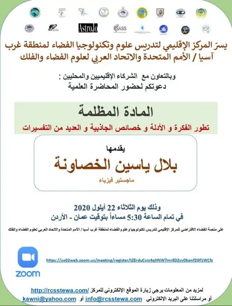
محاضرات وفعاليات · دعوة عامة – حضور المحاضرة العلمية ” المادة المظلمة تطور الفكرة والأدلة وخصائص الجاذبية والعديد من التفسيرات “ -
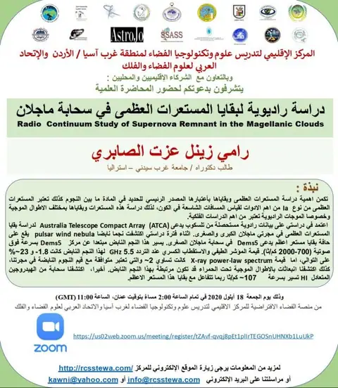
محاضرات وفعاليات · دعوة عامة – حضور المحاضرة العلمية ” دراسة راديوية لبقايا المستعرات العظمى في سحابة ماجلان “ -
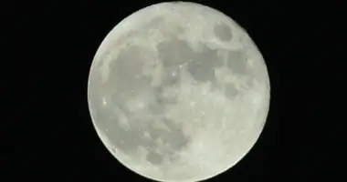
أخبار علمية · القمر يحجب المريخ غدا بالوطن العربي في ظاهرة فلكية نادرة - أخبار علمية · علماء: الأرض تتسبب في «صدأ» القمر
- أخبار علمية · تعيين الدكتور محمد القوصي في وظيفة الرئيس التنفيذي لوكالة الفضاء المصرية بدرجة وزير
- أخبار علمية · المجموعة العربية للتعاون الفضائي
- أخبار علمية · قمر صناعي أطلقته “ناسا” قبل 56 عاما يسقط على الأرض
-
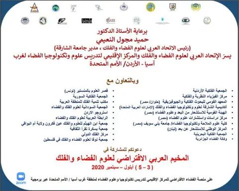
محاضرات وفعاليات · دعوة للمشاركة في المخيم العربي الافتراضي لعلوم الفضاء والفلك (3 – 5) سبتمبر – أيلول 2020 - أخبار علمية · فيديو – التفكر من أهم طرق معرفة الله
- أخبار علمية · سلسلة محاضرات “جولات في تاريخ علوم الطبيعة وفلسفتها”
آب 2020
-
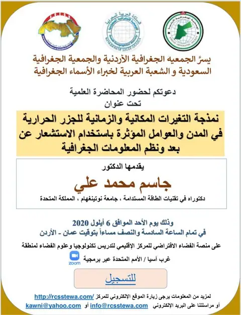
محاضرات وفعاليات · دعوة لحضور المحاضرة العلمية “نمذجة التغيرات المكانية والزمانية للجزر الحرارية في المدن والعوامل المؤثرة باستخدام الاستشعار عن بعد ونظم المعلومات الجغرافية” يقدمها الدكتور جاسم محمد علي -
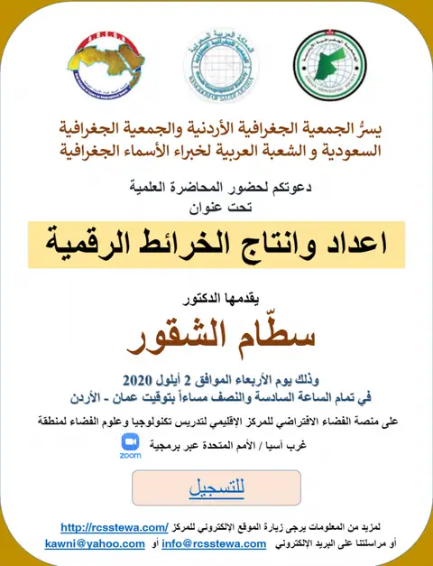
محاضرات وفعاليات · دعوة لحضور المحاضرة العلمية “إعداد وإنتاج الخرائط الرقمية” يقدمها الدكتور سطام الشقور - أخبار علمية · حجم كواكب المجموعة الشمسية
- أخبار الاتحاد · نعي فاضلة
- أخبار علمية · الإمارات تؤسس مركزاً متكاملاً لتجميع الأقمار الاصطناعية
تموز 2020
-
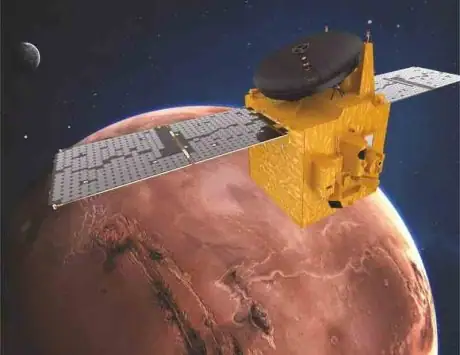
أخبار علمية · «مسبار الأمل» في عيون العرب -
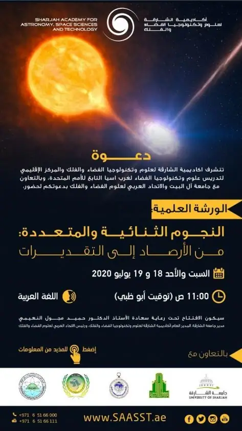
محاضرات وفعاليات · دعوة لحضور ورشة بعنوان ” النجوم الثنائية والمتعددة: من الأرصاد إلى التقديرات” -
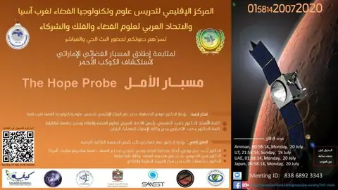
محاضرات وفعاليات · الموعد الثالث لمسبار الأمل حسب آخر تحديث من وكالة الإمارات للفضاء - أخبار علمية · فيديو مترجم: ما هو الكون المرئي؟!
- محاضرات وفعاليات · محاضرة بعنوان: الانفجار الكوني العظيم
-
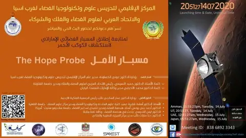
محاضرات وفعاليات · دعوة لحضور البث الحي والمباشر لمتابعة إطلاق المسبار الفضائي الإماراتي لاستكشاف الكوكب الأحمر مسبار الأمل The Hope Probe -
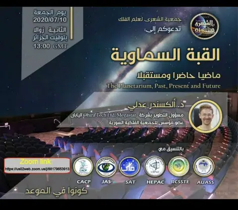
أخبار علمية · جمعية الشعرى لعلم الفلك تدعوكم إلى “القبة السماوية ماضياً حاضراً ومستقبلاً” د. ألكسندر عدلي -
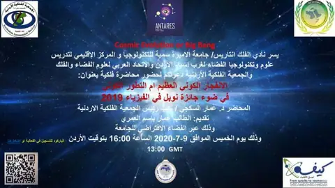
محاضرات وفعاليات · دعوة عامة – محاضرة بعنوان “الانفجار الكوني العظيم أم التطور الكوني في ضوء جائزة نوبل في الفيزياء 2019” -
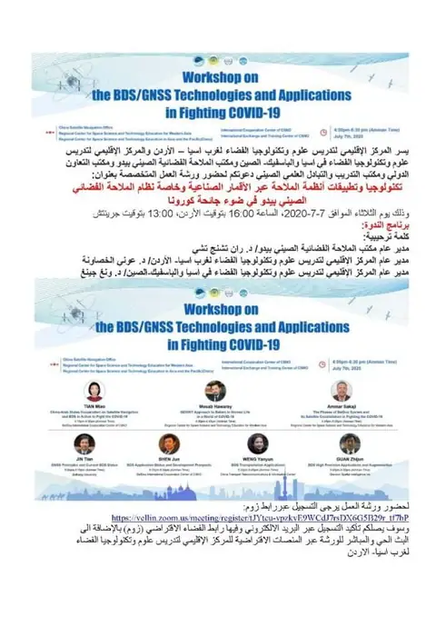
محاضرات وفعاليات · دعوة عامة – ورشة عمل المتخصصة بعنوان: تكنولوجيا وتطبيقات أنظمة الملاحة عبر الأقمار الصناعية وخاصة نظام الملاحة الفضائي الصيني بيدو في ضوء جائحة كورونا -
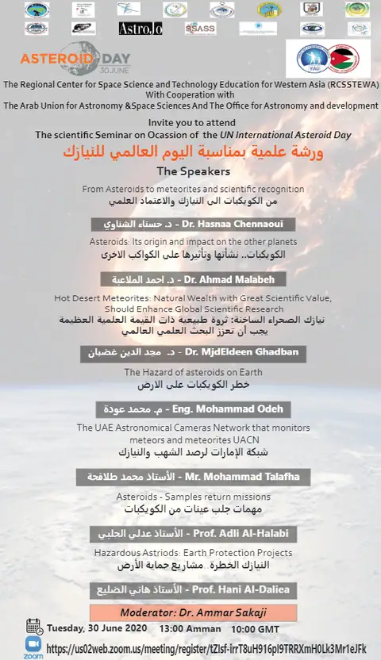
محاضرات وفعاليات · دعوة عامة – ورشة علمية بمناسبة اليوم العالمي للنيازك
حزيران 2020
-
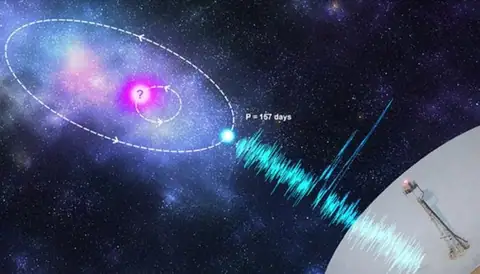
أخبار علمية · العلماء في حيرة… الأرض تستقبل إشارات راديوية منتظمة من مكان غامض في الفضاء -
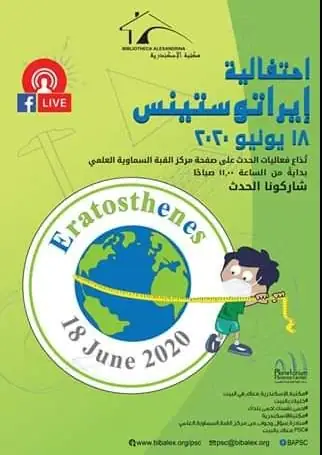
أخبار علمية · احتفالية إراتوستينس -
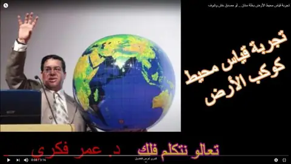
أخبار علمية · تجربة قياس محيط الأرض بخلّة أسنان -
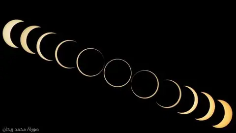
أخبار علمية · نشاطات سلطنة عمان في كسوف ٢١ حزيران -
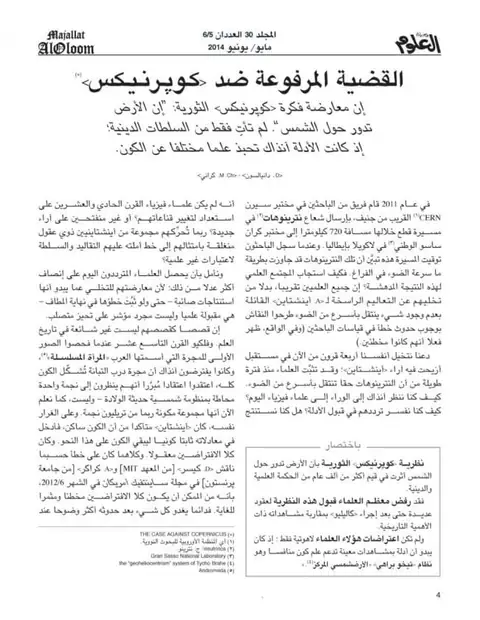
أخبار علمية · القضية المرفوعة ضد كوبرنيكوس “إن الأرض تدور حول الشمس” -
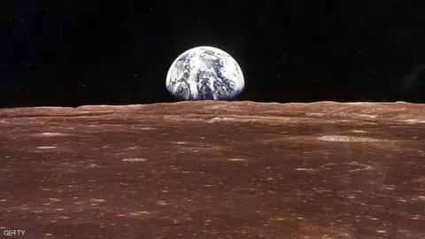
أخبار علمية · “ناسا” تموّل أبحاثا للعثور على “حياة ذكية” في الفضاء -
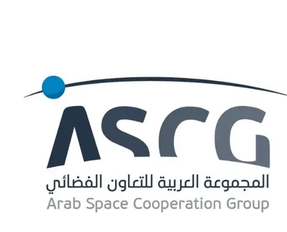
أخبار علمية · الإعلان عن الشعار الفائز في مسابقة تصميم شعار المجموعة العربية للتعاون الفضائي - محاضرات وفعاليات · دعوة عامة – ورشة علمية بعنوان “مشروع الإمارات لاستكشاف المريخ: من الحلم إلى الواقع أو الحقيقة”
-
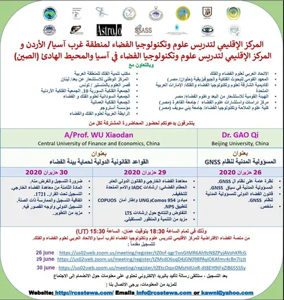
محاضرات وفعاليات · دعوة عامة – محاضرة مشتركة بعنوان “القواعد القانونية الدولية لحماية بيئة الفضاء” و “المسؤولية المدنية لنظام GNSS “ - أخبار علمية · تكريم عالمة الفضاء السودانية بوكالة ناسا، البروفيسور وداد المحبوب
-
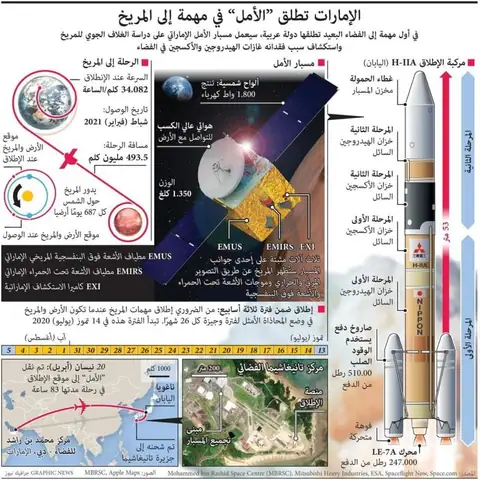
أخبار علمية · الـ”Graphic News”: الإمارات تستكشف المريخ في إنجاز علمي عربي -
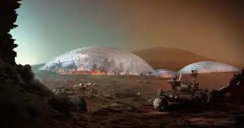
أخبار علمية · خطة رائعة لمدينة مريخية تحت قبة بيولوجية - أخبار علمية · المملكة توقع على الميثاق الأساسي للمجموعة العربية للتعاون الفضائي بمشاركة 14 دولة
-
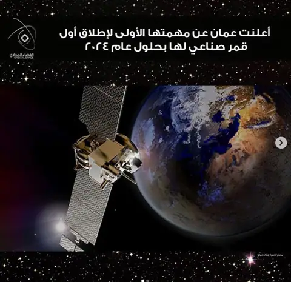
أخبار علمية · عمان تعلن عن مهمتها الأولى لإطلاق أول قمر صناعي لها بحلول عام 2024 -
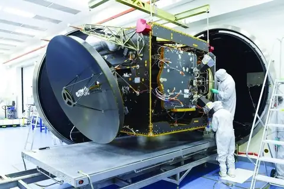
أخبار علمية · 30 يوماً لإطلاق مسبار الأمل إلى المريخ من اليابان - أخبار علمية · ارتفاع صاروخ فالكون ٩ حاملا ٦٠ قمرا صناعيا
- أخبار علمية · تصوير عبور محطة الفضاء الدولية على قرص الشمس – مرصد الزعاق
- أخبار علمية · مركز سلطان بن عبدالعزيز للعلوم والتقنية (سايتك) – جامعة الملك فهد للبترول والمعادن كسوف حلقي يوم الأحد 29 شوال 1441 هـ الموافق لـ 21 يونيو 2020 م
-
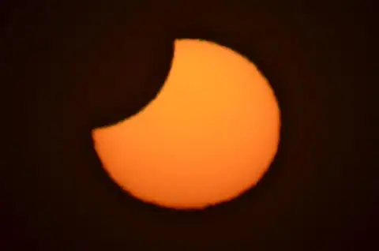
محاضرات وفعاليات · دعوة إلى فعالية كسوف الشمس الجزئي في جبل القلعة -
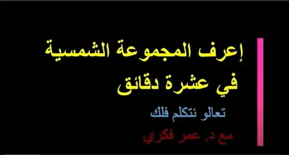
أخبار علمية · فيديو من الآخر: اعرف المجموعة الشمسية وعناصرها في (عشر دقائق فقط) - محاضرات وفعاليات · دعوة عامة – محاضرة مشتركة بعنوان “لمحة عامة عن ثراء النيازك في العالم العربي ” و “نيازك من المغرب: نموذج تطور العلوم في الدول العربية”
-
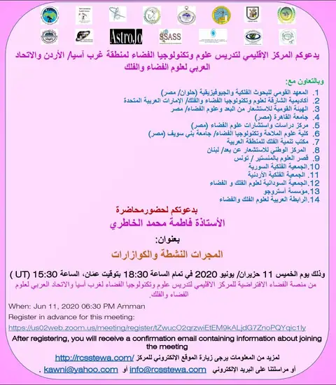
محاضرات وفعاليات · دعوة عامة – محاضرة بعنوان “المجرات النشطة والكوازارات “ -
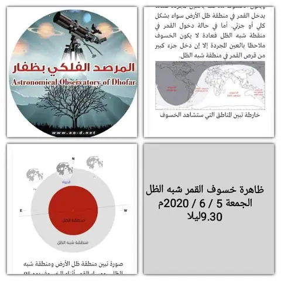
أخبار علمية · ظاهرة خسوف القمر شبه الظل -
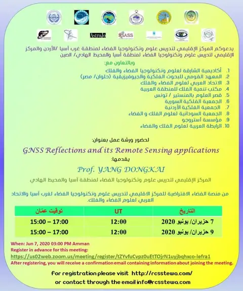
محاضرات وفعاليات · ورشة عمل بعنوان ” GNSS Reflections and its Remote Sensing Applications “ -
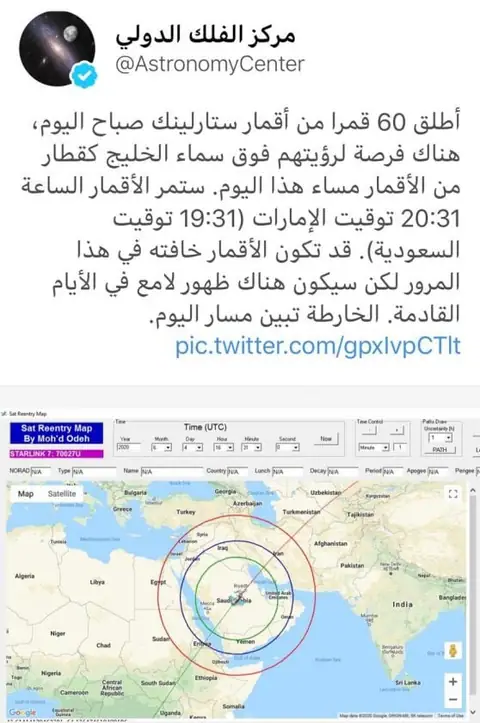
أخبار علمية · مركز الفلك الدولي – إطلاق ٦٠ قمر ستارلينك -
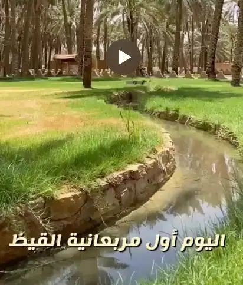
أخبار علمية · فيديو المربعانية -
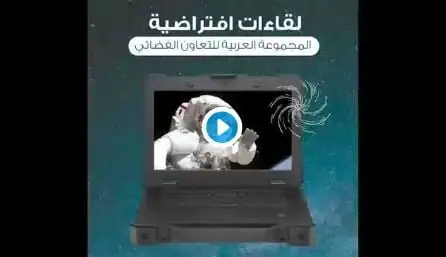
محاضرات وفعاليات · اجتماع المجموعة العربية للتعاون الفضائي لمناقشة مستجدات القمر الصناعي 813، وميثاق المجموعة العربية
أيار 2020
-
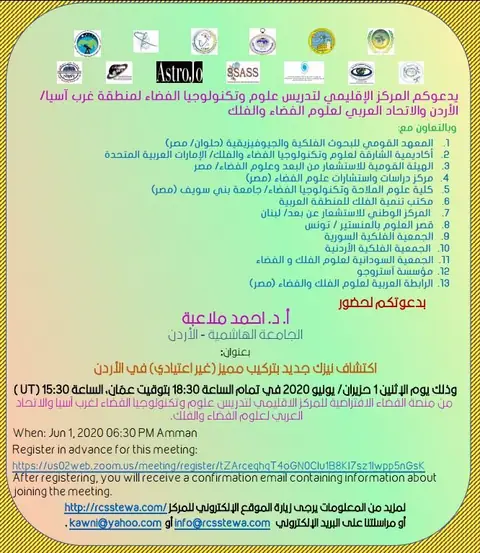
محاضرات وفعاليات · دعوة – محاضرة بعنوان “اكتشاف نيزك جديد بتركيب مميز (غير اعتيادي) في الأردن “ -
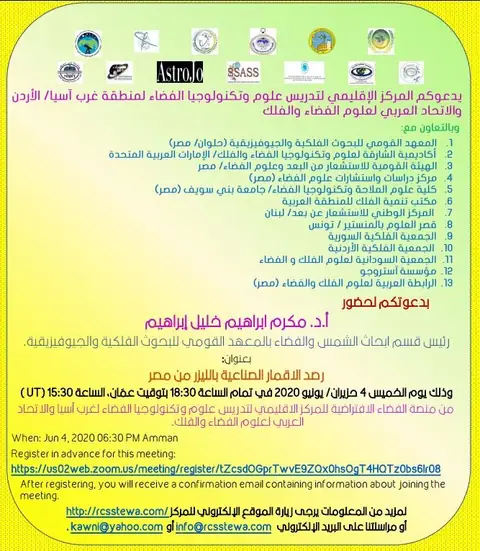
محاضرات وفعاليات · دعوة عامة – محاضرة بعنوان “رصد الأقمار الصناعية بالليزر من مصر “ -
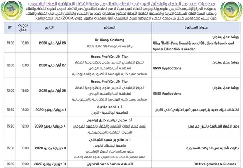
أخبار علمية · محاضرات لعدد من العلماء والباحثين العرب في الفضاء والفلك من منصة الفضاء الافتراضية للمركز الإقليمي - أخبار علمية · إطلاق تشبيهي لصاروخ فالكن 9 وعلى متنه رائدا فضاء بعد توقف دام 9 سنوات منذ آخر مهمة أُطلقت من أمريكا إلى محطة الفضاء الدولية، وهي مكوك الفضاء أتلانتس عام 2011
-
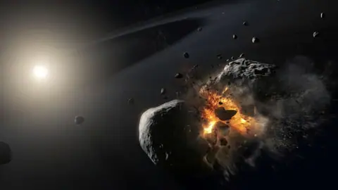
أخبار علمية · ناسا تتعقب كويكبا يقترب من الأرض “بسرعة عالية”! - أخبار علمية · خبراء: الصين تتقدم في سباق البحث عن ذكاء خارج الأرض
- محاضرات وفعاليات · التسجيل الكامل للمحاضرة القيمة: وقفات مع حياة الراحل البروفيسور باول كونيتش يقدمها الفلكي هاني الضليع أحد مؤسسي الجمعية الفلكية الأردنية
- محاضرات وفعاليات · ورشة عمل بعنوان “GNSS APPLICATIONS”
- أخبار علمية · نعي عالم فاضل
- محاضرات وفعاليات · دعوة عامة – محاضرة بعنوان”مزولة الجامع الاموي بين ابن الشاطر والطنطاوي”
- أخبار علمية · تعالوا نتكلم فلك: برج الحواء (حامل الثعبان أوفييكيوس).. البرج الجديد
- محاضرات وفعاليات · دعوة عامة – محاضرة بعنوان “مراقبة نوعية المياه من خلال الاستشعار عن بعد تم تنفيذه على بحيرة القرعون في لبنان”
- أخبار علمية · أكبر خمسة إخفاقات فضائية في 2019
- أخبار علمية · إطلاق قمر صناعي مصري من نوع «كيوب سات» لأغراض البحث العلمي
- أخبار علمية · «مسبار الأمل» رسالة للعالم
-
 أخبار علمية · وكالة الإمارات للفضاء تطلق برنامج «نيو سبيس» للابتكار
أخبار علمية · وكالة الإمارات للفضاء تطلق برنامج «نيو سبيس» للابتكار
- أخبار علمية · سلطان بن سلمان: المملكة تسير بخطى حثيثة نحو بناء مستقبل واعد.. إقرار الاستراتيجية السعودية للفضاء ورسم معالمها المستقبلية
- محاضرات وفعاليات · الاجتماع الرابع لممثلي الدول الأعضاء في المجموعة العربية للتعاون الفضائي
- أخبار علمية · مصر تطلق قمراً صناعياً يسمى “طيبة 1” للاستعانة به في مجال الاتصالات وتكنولوجيا المعلومات
- أخبار علمية · فرنسا تكشف اليوم عن استراتيجيتها الفضائية العسكرية الجديدة
- محاضرات وفعاليات · دعوة عامة – محاضرة بعنوان “علم الفلك من أجل التنمية في عهد 19-COVID “
- محاضرات وفعاليات · ورشة عمل بعنوان ” أنظمة الملاحة الفضائية العالمية”
- أخبار علمية · مذنب لامع في السماء يمكن رؤيته الآن بالعين المجردة – 22 مايو – 21 يونيو
- أخبار علمية · موقع يبين أعداد الأقمار الصناعية الموجودة على الكرة الأرضية
- أخبار علمية · الطالبة أحلام القاسم من طلبة الوكالة مبتعثة في بريطانيا لدراسة درجة الدكتوراه في الفيزياء الكونية.
- أخبار علمية · الصين تدخل مرحلة جديدة من “مسيرة طويلة” لاستكشاف الفضاء
- أخبار علمية · محطة الفضاء الدولية / الإمارات
- أخبار علمية · الهيئة السعودية للفضاء / يوم الأرض
- أخبار علمية · الصين تعلن اسم أول بعثة لاستكشاف المريخ
- أخبار علمية · سفير دولة الإمارات: “رحلة المريخ” في يوليو ولا تأجيل بسبب “كورونا”
- أخبار علمية · تخصيص 30 مليون درهم من جامعة الإمارات لمشاريع الفضاء
- أخبار علمية · وكالة الإمارات للفضاء تنظم اجتماعا عن بعد لطلبتها المستفيدين من برنامجي الابتعاث والرعاية لدراسة علوم وتقنيات الفضاء داخل وخارج الدولة
- أخبار علمية · مناقشة مشروع القمر الصناعي العربي
- أخبار علمية · مجلس إدارة الهيئة السعودية للفضاء يوافق على دراسة تأسيس الشركة السعودية للفضاء ومشروع نظام الفضاء
- أخبار علمية · لماذا يريد ترامب التنقيب عن المعادن على سطح القمر؟
- أخبار علمية · المركز الوطني لتكنولوجيا الفضاء ووكالة الإمارات للفضاء يستعدان لإطلاق القمر الصناعي المصغر
- أخبار علمية · محمد بن زايد يصدر قراراً بإعادة تشكيل مجلس أمناء جامعة خليفة للعلوم والتكنولوجيا
- أخبار علمية · المريخ 2020 | Mars 2020
- أخبار علمية · مشروع لـ«الجينوم» ومستشفى في الفضاء.. “الصحة” رعاية عالمية بكوادر وطنية
-
أخبار علمية · أول مهمة فضائية عربية لاستكشاف المريخ
- أخبار علمية · المشروع الوطني للقمر الصناعي الكويتي الأول
- أخبار علمية · محمد الأحبابي مدير عام وكالة الإمارات للفضاء: الإمارات أصبحت تمتلك منظومة تشريعية متكاملة للقطاع بعد قانون الفضاء الجديد.
- أخبار علمية · مسكن فوق سطح القمر | وثائقية دي دبليو – وثائقي علم
- محاضرات وفعاليات · دعوة عامة – محاضرة بعنوان ” محاضرة تعريفية عن الهيئة القومية للاستشعار “
- أخبار علمية · أوضح صورة في العالم لحفر وفوهات القمر
- أخبار علمية · مقابلة الفيزيائي الدكتور عمار السكجي مع قناة سكاي نيوز حول اكتشاف ثقب أسود في برج المرقب وهو الأقرب إلى الأرض
- أخبار علمية · أدلة جديدة تنسف “نظرية #القمر”.. وتذهل العلماء
- أخبار علمية · في أي يوم من الشهر الهجري يصبح القمر بدرا؟
- أخبار علمية · كتاب قيم “طلوع الفجر الصادق بين تحديد القرآن وإطلاق اللغة”
- أخبار علمية · فيديو توضيحي للمراحل التي سيمر بها #مسبار_الأمل في رحلته إلى الكوكب الأحمر
- أخبار علمية · كيف نسيطر على خطر المخلفات الفضائية وما آفاق حل المعضلة؟
- أخبار علمية · “مناطق أمنية وحقوق للمواد المستخرجة”.. الولايات المتحدة تقوم بصياغة اتفاقية للتعدين على القمر
- محاضرات وفعاليات · محاضرة الثقوب السوداء وموجات الجاذبية أ.د.شوقي الدلال
- أخبار علمية · تقويم أوائل أشهر المناسبات الدينية الإسلامية المقدسة للقرن الخامس عشر الهجري
- أخبار علمية · عالمة فلك شهيرة تكشف عن الحلقات المفقودة في نظرية الانفجار الكبير وتشكل الأجرام والمجرات
- أخبار علمية · (الأسس الفكرية لنظرية النسبية) الأستاذ الدكتور هشام غصيب
- أخبار علمية · فيلم وثائقي حديث حول اصل المجموعة الشمسية
-
 أخبار علمية · تكوين النجوم الثنائية في ضوء حقبة البيانات الكبيرة
أخبار علمية · تكوين النجوم الثنائية في ضوء حقبة البيانات الكبيرة
- أخبار علمية · بناء الكون ومصير الإنسان
- أخبار علمية · طور الدكتور وهيب الناصر، أستاذ الفيزياء في جامعة البحرين، منظورًا رياضيًّا لإصابات فيروس كورونا في البحرين والسعودية
- أخبار علمية · كتاب قيم بعنوان “WHAT IS REAL?”
- محاضرات وفعاليات · دعوة عامة – محاضرة بعنوان “كيفية التعرف إلى مكونات الأغلفة الجوية للكواكب الخارجية”
- أخبار علمية · هابل يلتقط نجما يحتضر في كوكبة الجوزاء (NGC 2371/2)
- أخبار علمية · تأثير الارتفاع عن سطح البحر على مواقيت الصلاة
- أخبار علمية · طلوع نجم سهيل: ما معناه ومتى موعده؟
- أخبار علمية · المواسم عند العرب: المربعانية والخماسينية وسهيل. موعدها في الجزيرة العربية وبلاد الشام
- أخبار علمية · تنبؤات الأبراج ما بين الحقيقة العلمية والتنجيم
- أخبار علمية · Moon Phases – مراحل وأطوار القمر
- أخبار علمية · زاوية الفجر والعشاء المعتمدة لدى جمعية إسنا
- أخبار علمية · ما هي الزاوية الصحيحة لأول وقت صلاة الفجر
- أخبار علمية · أسماء النجوم الملاحية في كتاب الأرجوزة في الكواكب الثابتة
- أخبار علمية · المشروع الإسلامي لرصد الأهلة
- أخبار علمية · مسبار الأمل في طريقه ووصوله إلى اليابان
- أخبار علمية · حجمنا في الكون
- محاضرات وفعاليات · دعوة – عامة “مشروع ويلفرم الفيزيائي: مشروع لإيجاد النظرية الأساسية في الفيزياء”
- أخبار علمية · كيفية حساب مواقيت الصلاة
- أخبار علمية · تعالوا نتكلم فلك: برج الميزان
- أخبار علمية · تعالوا نتكلم فلك: برج الأسد
- أخبار علمية · تعالوا نتكلم فلك: برج السرطان
- أخبار علمية · تعالوا نتكلم فلك: برج الجوزاء
- أخبار علمية · تعالوا نتكلم فلك: الحمل
- أخبار علمية · الكواكب والنجوم في مجرتنا
- أخبار علمية · مرصد أم الدامي
- أخبار علمية · دقائق فلكية – عبد الرزاق البلوشي
- أخبار علمية · ما هو الاقتران السطحي؟
- أخبار علمية · مجلة الثُريا – إصدار مايو 2020
- أخبار علمية · انفجارات نجمية (3/9)
- محاضرات وفعاليات · دعوة عامة – محاضرة تحت عنوان “المادة الغريبة والمحيرة (السالبة) الناتجة من اندماج النجوم النيوترونية”
- أخبار علمية · إعلان محاضرات لعدد من العلماء والباحثين العرب في الفضاء والفلك من منصة الفضاء الافتراضية للمركز الإقليمي
- أخبار علمية · اليوم العالمي للفلك 2020
نيسان 2020
- أخبار علمية · دروس مستفادة من دراسة المجرات الجزء1
- أخبار علمية · دروس مستفادة من دراسة المجرات الجزء2
- أخبار علمية · دروس مستفادة من دراسة المجرات الجزء3
- أخبار علمية · دروس مستفادة من دراسة المجرات الجزء4
- أخبار علمية · أول خريطة شاملة للقمر
- محاضرات وفعاليات · الاجتماع الخامس لمنطقة الشرق الأوسط وأفريقيا / 17-15 سبتمبر 2020
- محاضرات وفعاليات · دعوة عامة – محاضرة بعنوان”Extraction of Land Surface Temperature from Satellite images “
- أخبار علمية · كورونا والبيئة….. هل يتعلم الإنسان الدرس؟
- محاضرات وفعاليات · دعوة عامة – محاضرة بعنوان “تجربة السودان في تطبيق خريطة الأساس للمعلومات الجيومكانية
- محاضرات وفعاليات · دعوة عامة – دروس مستفادة من دراسة المجرات
- محاضرات وفعاليات · دعوة عامة – محاضرة بعنوان “نشوء وتطور النجوم”
-
 محاضرات وفعاليات · دعوة عامة – محاضرة بعنوان “Hubble Space Telescope (HST): 30 Years of Exploring the Universe”
محاضرات وفعاليات · دعوة عامة – محاضرة بعنوان “Hubble Space Telescope (HST): 30 Years of Exploring the Universe”
- أخبار علمية · المادة المظلمة وتشكل المجرات
- محاضرات وفعاليات · دعوة عامة – محاضرة بعنوان “تكنولوجيا الفضاء في دراسة التغير المناخي”
- محاضرات وفعاليات · ندوة علمية بعنوان “تحري شهر رمضان الكريم بين الشرع وعلم الفلك”
- محاضرات وفعاليات · دعوة عامة – محاضرة بعنوان “Raster Interpolation”
- أخبار علمية · فيلم عن المسلمين – مترجم
- محاضرات وفعاليات · دعوة عامة – محاضرة بعنوان “Practice training building geodatabase using subtype & domain & symbology Categories”
- أخبار علمية · «الإمارات للفضاء» تبدأ «مسرعات الأعمال» إلكترونياً
- محاضرات وفعاليات · دعوة عامة – محاضرة بعنوان “Basic Concept in building Database”
- محاضرات وفعاليات · دعوة عامة – محاضرة بعنوان “Basic Concept in Building Database”
- محاضرات وفعاليات · دعوة عامة – محاضرة بعنوان “Thematic Maps”
- أخبار علمية · إعلان محاضرات لعدد من العلماء والباحثين العرب في الفضاء والفلك من منصة الفضاء الافتراضية للمركز الإقليمي
- أخبار علمية · روح العصر (مترجم) – الجزء الأول
آذار 2020
شباط 2020
- أخبار علمية · فيديو مترجم: الأعاصير 101
- أخبار علمية · عرض سماوي الليلة
- أخبار علمية · «هلال رجب» يزين سماء الوطن العربي… الليلة
- أخبار علمية · في مثل هذا اليوم 24 فبراير من العام 1987
-
 محاضرات وفعاليات · ورشة متخصصة في البيانات الضخمة وتطبيقاتها الفيزيائية
محاضرات وفعاليات · ورشة متخصصة في البيانات الضخمة وتطبيقاتها الفيزيائية
- محاضرات وفعاليات · ورشة متخصصة في قانون الفضاء وتطبيقاته
كانون الثاني 2020
لا توجد منشورات من هذا النوع في هذه السنة.